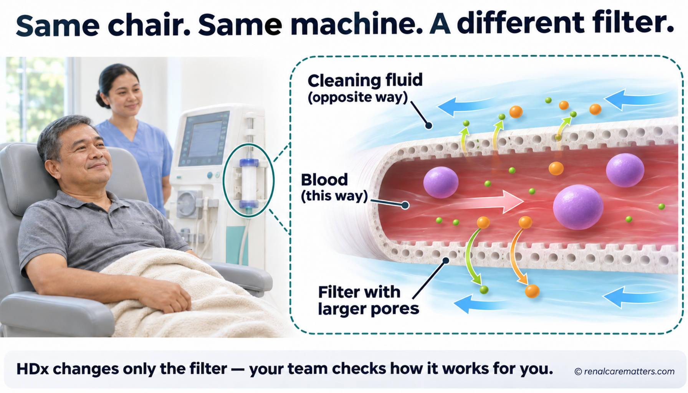
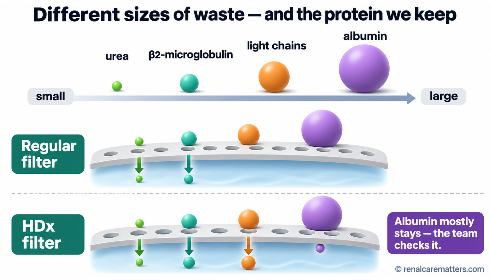
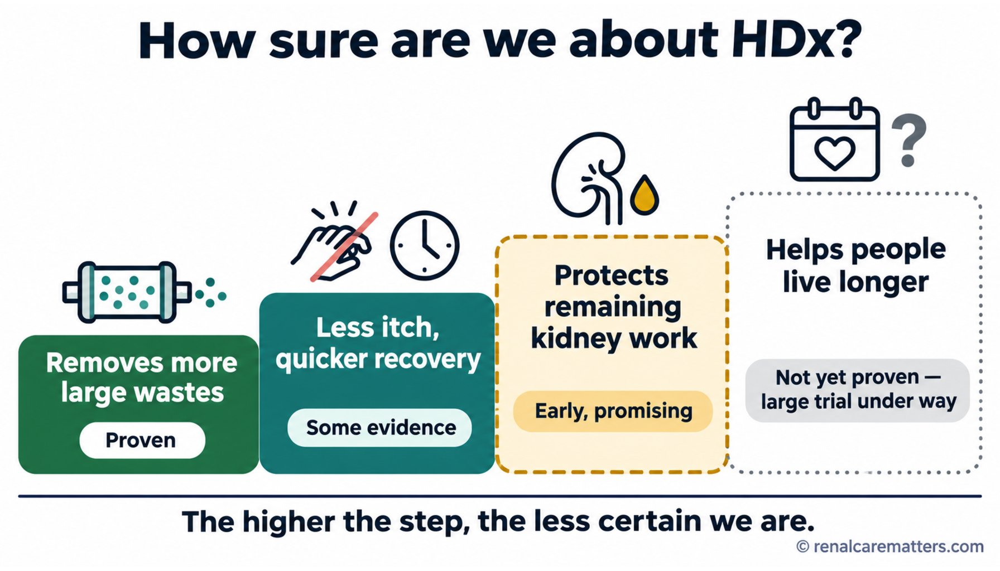
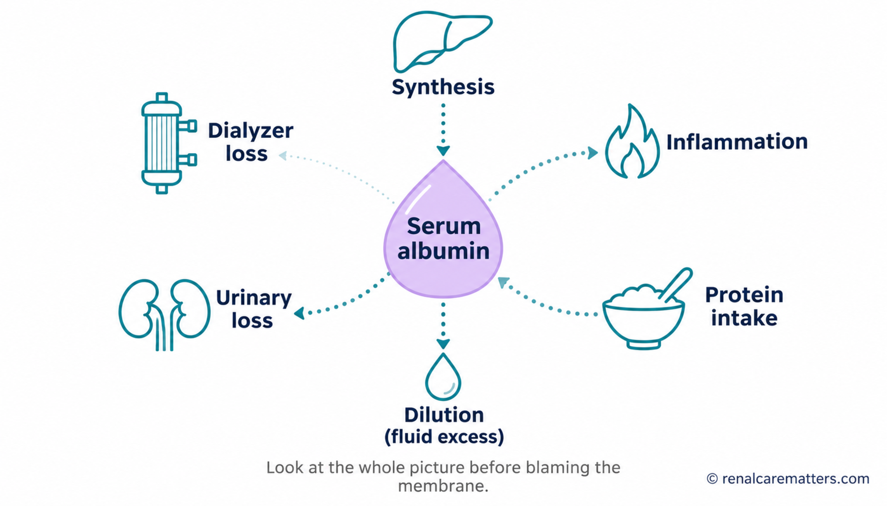

Same machine, same chair — a different filterParehong makina, parehong upuan — ibang filterParehas nga makina, parehas nga lingkuranan — lahi nga filterPareung makina, pareung upuan — aliwang filter
The filter used during dialysis decides which wastes leave your blood. Expanded hemodialysis, often shortened to HDx, uses a newer filter called a medium cut-off (MCO) dialyzer that removes some larger wastes better than the usual filter, while trying to keep the protein your body needs. Your session, machine, chair, and nurses stay the same. Your team can explain what they hope HDx will improve for you, how they will check whether it is working, and whether it changes what you pay.Ang filter na ginagamit sa dialysis ang nagpapasya kung aling dumi ang lalabas sa iyong dugo. Ang expanded hemodialysis, o HDx, ay gumagamit ng mas bagong filter na tinatawag na medium cut-off (MCO) dialyzer na mas mahusay mag-alis ng ilang mas malalaking dumi kaysa sa karaniwang filter, habang sinisikap na panatilihin ang protina na kailangan ng iyong katawan. Pareho pa rin ang iyong session, makina, upuan, at mga nars. Maipapaliwanag ng iyong team kung ano ang inaasahan nilang mapabuti ng HDx sa iyo, paano nila susuriin kung gumagana ito, at kung may epekto ito sa iyong babayaran.Ang filter nga gigamit sa dialysis ang modesisyon kung unsang hugaw ang mogawas sa imong dugo. Ang expanded hemodialysis, o HDx, mogamit og mas bag-o nga filter nga gitawag og medium cut-off (MCO) dialyzer nga mas maayo motangtang sa pipila ka mas dagkong hugaw kaysa sa naandang filter, samtang naningkamot nga tipigan ang protina nga kinahanglan sa imong lawas. Parehas gihapon ang imong session, makina, lingkuranan, ug mga nars. Ikapasabot sa imong team kung unsa ang ilang gilauman nga mapaayo sa HDx kanimo, unsaon nila pagsusi kung molihok ba kini, ug kung makaapekto ba kini sa imong bayronon.Ing filter a gamitan king dialysis ing magpasya nung nanung dinat ing lumual king daya mu. Ing expanded hemodialysis, o HDx, gagamit yang mas bayung filter a aus deng medium cut-off (MCO) dialyzer a mas mayap mamako kareng aliwang mas maragul a dinat nung ing karaniwang filter, kabang pakisanmetung yang panatilian ing protina a kailangan ning katawan mu. Pareu ya pa murin ing session, makina, upuan, at reng nars mu. Apaliwanag na ning team mu nung nanu ing iasa dang mayapan ning HDx keka, makananu deng surian nung gagana ya, at nung atin epektu ya king bayaran mu.
Healthy kidneys filter your blood every minute of the day. They let out waste of many sizes, from tiny molecules such as urea to medium-sized proteins that the body no longer needs, while holding on to large, valuable proteins such as albumin. When the kidneys fail, a dialysis filter (the dialyzer) takes over part of that job. It is a plastic tube packed with thousands of hair-thin hollow fibers. Blood flows inside the fibers; cleaning fluid (dialysate) flows outside them. The fiber walls are full of tiny holes, or pores. Wastes small enough to fit through the pores pass from the blood into the cleaning fluid and are thrown away.Sinasala ng malulusog na bato ang iyong dugo bawat minuto ng araw. Pinalalabas nila ang dumi na iba-iba ang laki, mula sa maliliit na molekula gaya ng urea hanggang sa katamtamang laki na protina na hindi na kailangan ng katawan, habang pinapanatili ang malalaki at mahalagang protina gaya ng albumin. Kapag pumalya ang bato, ang dialysis filter (ang dialyzer) ang umaako sa bahagi ng trabahong iyon. Isa itong plastik na tubo na puno ng libu-libong hollow fiber na kasingnipis ng buhok. Dumadaloy ang dugo sa loob ng mga fiber; dumadaloy naman sa labas ang panlinis na likido (dialysate). Puno ng maliliit na butas, o pores, ang dingding ng mga fiber. Ang mga duming kasya sa mga butas ay lumilipat mula sa dugo papunta sa panlinis na likido at itinatapon.Ginasala sa himsog nga bato ang imong dugo matag minuto sa adlaw. Gipagawas nila ang hugaw nga lain-lain ang gidak-on, gikan sa gagmay nga molekula sama sa urea hangtod sa tunga-tunga nga gidak-on nga protina nga dili na kinahanglan sa lawas, samtang gitipigan ang dagko ug bililhong protina sama sa albumin. Kung mapakyas ang bato, ang dialysis filter (ang dialyzer) ang moako sa bahin niana nga trabaho. Usa kini ka plastik nga tubo nga puno sa linibo ka hollow fiber nga sama kanipis sa buhok. Moagos ang dugo sa sulod sa mga fiber; moagos sa gawas ang panglimpyo nga likido (dialysate). Puno sa gagmay nga lungag, o pores, ang bungbong sa mga fiber. Ang mga hugaw nga kasulod sa mga lungag mobalhin gikan sa dugo ngadto sa panglimpyo nga likido ug ilabay.Salan ning malusug a batu ing daya mu balang minutu king aldo. Paluwalan dang dinat a mikakaiba ing kalagwan, manibat kareng malati a molekula anti ning urea anggang kareng katamtamang protina a e na kailangan ning katawan, kabang panatilian dang ing maragul at mayalagang protina anti ning albumin. Nung mitakman ing batu, ing dialysis filter (ing dialyzer) ing umaku king bage ning obrang ita. Metung yang plastik a tubu a mitmu libu-libung hollow fiber a kasinlati ning buak. Dadaluy ing daya king kilub da reng fiber; dadaluy ya king luwal ing panlinis a likidu (dialysate). Mitmu malating butas, o pores, ing dingding da reng fiber. Ing dinat a kasya kareng butas lilipat ya manibat king daya pakaraya king panlinis a likidu at ibusni ya.

Same chair and machine — only the filter changes. The HDx filter has slightly larger, more even pores, so more medium-sized wastes pass out while most albumin stays in.Parehong upuan at makina — filter lang ang nagbabago. Ang filter ng HDx ay may bahagyang mas malalaki at mas pantay na butas, kaya mas maraming katamtamang laking dumi ang lumalabas habang naiiwan ang karamihan ng albumin.Parehas nga lingkuranan ug makina — filter ra ang mausab. Ang filter sa HDx adunay gamay nga mas dagko ug mas parehas nga lungag, mao nga mas daghang tunga-tunga nga hugaw ang mogawas samtang mabilin ang kadaghanan sa albumin.Pareung upuan at makina — filter mu ing mibayu. Ing filter ning HDx atin yang kaunting mas maragul at mas pantay a butas, anya mas dakal a katamtamang dinat ing lumual kabang mapagkawan ing kayaliwan ning albumin.
- HDx
- Expanded hemodialysis
- MCO
- Medium cut-off (dialyzer)
A useful picture is a kitchen strainer. A strainer with holes that are too small keeps back lumps you wanted to remove; holes that are too big let through things you wanted to keep. The HDx filter is designed with pores that are a little larger and more uniform, so that medium-sized wastes pass more easily, while albumin, which is only somewhat larger, mostly stays in the blood. The comparison has limits: a dialysis filter also works by pressure and by the way fluid moves back and forth along the fibers, not only by hole size. That is why your team measures results in your blood instead of assuming them.Isang kapaki-pakinabang na larawan ang salaan sa kusina. Kapag masyadong maliit ang butas, naiiwan ang mga butil na gusto mong alisin; kapag masyadong malaki, nakakalusot ang mga bagay na gusto mong itira. Ang filter ng HDx ay dinisenyo na may mga butas na medyo mas malaki at mas pantay-pantay, kaya mas madaling lumabas ang katamtamang laking dumi, habang ang albumin, na bahagyang mas malaki lamang, ay karaniwang naiiwan sa dugo. May hangganan ang paghahambing: gumagana rin ang dialysis filter sa pamamagitan ng presyon at ng paggalaw ng likido pabalik-balik sa kahabaan ng mga fiber, hindi lang sa laki ng butas. Kaya sinusukat ng iyong team ang resulta sa iyong dugo sa halip na hulaan ito.Usa ka mapuslanon nga hulagway ang salaan sa kusina. Kung gamay kaayo ang lungag, mabilin ang mga bukol nga gusto nimong tangtangon; kung dako kaayo, makalusot ang mga butang nga gusto nimong ibilin. Ang filter sa HDx gidisenyo nga adunay mga lungag nga medyo mas dako ug mas parehas, mao nga mas sayon mogawas ang tunga-tunga nga hugaw, samtang ang albumin, nga gamay ra ang kadak-on, kasagaran mabilin sa dugo. Adunay utlanan ang pagtandi: molihok usab ang dialysis filter pinaagi sa presyon ug sa paglihok sa likido balik-balik subay sa mga fiber, dili lang sa gidak-on sa lungag. Busa sukdon sa imong team ang resulta sa imong dugo imbes nga tagnaon kini.Metung a mayap a larawan ing salaan king kusina. Nung malati ing butas, mapagkawan ing butil a buri mung ilako; nung maragul, makalusut la ring bage a buri mung itagal. Ing filter ning HDx dinisenyu yang atin butas a kaunting mas maragul at mas pantay-pantay, anya mas malagwang lumual ing katamtamang dinat, kabang ing albumin, a kaunti mu ing kayabe kalagwan, karaniwan yang mapagkawan king daya. Atin anggang ing pamanikuat: gagana ya murin ing dialysis filter uli ning presyon at ning pamangalaut ning likidu pabalik-balik king kalabaran da reng fiber, e mu uli ning laki ning butas. Anya sukatan ning team mu ing resulta king daya mu nung e ra pagisipan.
Which wastes the new filter targets — and what it tries to keepAling dumi ang tinatarget ng bagong filter — at ano ang sinisikap nitong itiraUnsang hugaw ang gipunting sa bag-ong filter — ug unsa ang gisulayan niini nga ibilinNanung dinat ing tutuken ning bayung filter — at nanu ing pakisanmetung na itagal
Wastes in the blood come in different sizes, measured in units called daltons. Regular high-flux hemodialysis (HD) is very good at removing small wastes. Medium-sized wastes are harder to remove, and some of them build up over years. The new filter is aimed at the larger end of the medium group.Iba-iba ang laki ng dumi sa dugo, na sinusukat sa yunit na tinatawag na dalton. Napakahusay ng karaniwang high-flux hemodialysis (HD) sa pag-alis ng maliliit na dumi. Mas mahirap alisin ang katamtamang laking dumi, at naiipon ang ilan sa mga ito sa paglipas ng mga taon. Ang bagong filter ay nakatuon sa mas malaking dulo ng katamtamang grupo.Lain-lain ang gidak-on sa hugaw sa dugo, nga gisukod sa yunit nga gitawag og dalton. Maayo kaayo ang naandang high-flux hemodialysis (HD) sa pagtangtang sa gagmay nga hugaw. Mas lisod tangtangon ang tunga-tunga nga hugaw, ug ang pipila niini matigom sa paglabay sa mga tuig. Ang bag-ong filter nagpunting sa mas dakong tumoy sa tunga-tunga nga grupo.Mikakaiba ing kalagwan da reng dinat king daya, a susukatan king yunit a aus deng dalton. Mayap kaya ing karaniwang high-flux hemodialysis (HD) king pamamako kareng malati a dinat. Mas mirap ilako ing katamtamang dinat, at mipupun la reng aliwa kareti kabang miliban ing banwa. Ing bayung filter tutuken ne ing mas maragul a dulu ning katamtamang grupu.

Wastes from smallest to largest. Both filters remove small wastes well; HDx removes more of the larger medium-sized wastes; both try to keep albumin, the body's main blood protein.Mga dumi mula pinakamaliit hanggang pinakamalaki. Mahusay mag-alis ng maliliit na dumi ang dalawang filter; mas maraming malaking katamtamang dumi ang naaalis ng HDx; parehong sinisikap na itira ang albumin, ang pangunahing protina sa dugo.Mga hugaw gikan sa pinakagamay hangtod sa pinakadako. Maayo motangtang sa gagmay nga hugaw ang duha ka filter; mas daghang dako nga tunga-tunga nga hugaw ang matangtang sa HDx; parehong naningkamot nga ibilin ang albumin, ang panguna nga protina sa dugo.Reng dinat manibat king pekamalati anggang king pekamaragul. Mayap mamako kareng malating dinat ing adwang filter; mas dakal a maragul a katamtamang dinat ing ilako ning HDx; pareu dang pakisanmetung itagal ing albumin, ing pangunang protina king daya.
- β₂M
- β2-microglobulin
- FLC
- Free light chains
- HDx
- Expanded hemodialysis
Removing more is not the same as feeling betterAng mas maraming naaalis ay hindi pareho ng mas mabuting pakiramdamAng mas daghang matangtang dili parehas sa mas maayong pamatiIng mas dakal a ilako e ya kapareu ning mas mayap a pamakiramdam
Studies clearly show that HDx removes more of these larger wastes during a session. Whether that removal makes people feel better, stay out of the hospital, or live longer is a separate question, and the answers so far are less certain. Your team should not promise a result from a laboratory number alone.Malinaw na ipinapakita ng mga pag-aaral na mas maraming malalaking dumi ang naaalis ng HDx sa isang session. Kung nagpapabuti ba ito ng pakiramdam, nakakaiwas sa ospital, o nagpapahaba ng buhay ay ibang tanong, at hindi pa gaanong tiyak ang mga sagot. Hindi dapat mangako ang iyong team ng resulta batay lamang sa numero sa laboratoryo.Klaro nga gipakita sa mga pagtuon nga mas daghang dagkong hugaw ang matangtang sa HDx sulod sa usa ka session. Kung kini ba makapaayo sa pamati, makalikay sa ospital, o makapalugway sa kinabuhi lahi nga pangutana, ug dili pa kaayo sigurado ang mga tubag. Dili angay mosaad ang imong team og resulta base lang sa numero sa laboratoryo.Malino a ipakit da reng pag-aral a mas dakal a maragul a dinat ing ilako ning HDx king metung a session. Nung pampayap ya ini king pamakiramdam, pamiwas king ospital, o pamaba ning bie aliwang kutang ya, at e pa siguradu ing sagot. E dapat mangaku ing team mu resulta a makabatay mu king numeru ning laboratoryu.
What the research shows, in plain languageAno ang ipinapakita ng pananaliksik, sa simpleng salitaUnsa ang gipakita sa panukiduki, sa yanong pinulonganNanu ing ipakit ning pamanalikmuan, king simpleng amanu
Many people feel no difference after switching. Some report less itching, more energy, or a shorter time to recover after each session; in other studies the two filters scored the same. Here is how strong the evidence is for each hope, from strongest to weakest.Marami ang walang napapansing pagbabago pagkatapos lumipat. May ilang nag-uulat ng mas kaunting kati, mas maraming lakas, o mas maikling panahon ng paggaling pagkatapos ng bawat session; sa ibang pag-aaral, pareho ang marka ng dalawang filter. Narito kung gaano katibay ang ebidensya para sa bawat pag-asa, mula pinakamatibay hanggang pinakamahina.Daghan ang walay mamatikdang kausaban human mobalhin. Ang uban nagtaho og mas gamay nga katol, mas daghang kusog, o mas mubo nga panahon sa pagkaayo human sa matag session; sa ubang pagtuon, parehas ang marka sa duha ka filter. Ania kung unsa kalig-on ang ebidensya alang sa matag paglaum, gikan sa pinakalig-on hangtod sa pinakahuyang.Dakal ing ala mapansin a pamagbayu kaibat dang lumipat. Atin aliwang mamalita a mas kaunti ing kati, mas dakal ing sikan, o mas maikling panaun ning pamanyawa kaibat ning balang session; kareng aliwang pag-aral, pareu ing marka ning adwang filter. Oyni nung nukarin katibe ing ebidensya para king balang pamanasa, manibat king pekamatibe anggang king pekamayina.
Shown in many randomized trials. In the main United States trial, one large waste fell by 33% per session with HDx versus 17% with a regular filter.Ipinakita sa maraming randomized trial. Sa pangunahing pag-aaral sa U.S., bumaba ang isang malaking dumi nang 33% kada session sa HDx kumpara sa 17% sa karaniwang filter.Gipakita sa daghang randomized trial. Sa panguna nga pagtuon sa U.S., mius-os ang usa ka dakong hugaw og 33% matag session sa HDx itandi sa 17% sa naandang filter.Ipakit kareng dakal a randomized trial. King pangunang pag-aral king U.S., mibaba ing metung a maragul a dinat 33% balang session king HDx nung ikuat king 17% king karaniwang filter.
Seen in small or single studies; not every study agrees. Worth trying only with a clear way to check if it helps you.Nakita sa maliliit o iisang pag-aaral; hindi lahat ng pag-aaral ay sumasang-ayon. Sulit subukan lamang kung may malinaw na paraan para malaman kung nakakatulong ito sa iyo.Nakita sa gagmay o usa ra ka pagtuon; dili tanan nga pagtuon mouyon. Angay sulayan lamang kung adunay klaro nga paagi aron mahibal-an kung makatabang ba kini kanimo.Akit kareng malati o metung mung pag-aral; e ngan ding pag-aral misasabi. Sulit subukan nung atin malinong paralan bang abalu nung tutulung ya keka.
One Korean trial of 80 people starting dialysis found slower loss of kidney function over a year. It needs confirmation.Isang pag-aaral sa Korea sa 80 taong nagsisimula ng dialysis ang nakakitang mas mabagal ang pagkawala ng gana ng bato sa loob ng isang taon. Kailangan pa itong kumpirmahin.Usa ka pagtuon sa Korea sa 80 ka tawo nga nagsugod og dialysis ang nakakita nga mas hinay ang pagkawala sa gana sa bato sulod sa usa ka tuig. Kinahanglan pa kini kumpirmahon.Metung a pag-aral king Korea kareng 80 a taung mumpisa dialysis ing akakit a mas dahan ing pamanyalang ning gana ning batu king kilub ning metung a banwa. Kailangan pa yang kumpirman.
Only observational studies suggest this, and they can be misleading. A large trial in Canada, DIALEX (DIALysis with EXpanded solute removal), is testing it now, with results expected around 2030.Mga obserbasyonal na pag-aaral lamang ang nagmumungkahi nito, at maaari silang makalinlang. Isang malaking pag-aaral sa Canada, ang DIALEX (DIALysis with EXpanded solute removal), ang sumusubok nito ngayon, at inaasahan ang resulta bandang 2030.Mga obserbasyonal nga pagtuon lamang ang nagsugyot niini, ug mahimo silang makapahisalaag. Usa ka dakong pagtuon sa Canada, ang DIALEX (DIALysis with EXpanded solute removal), ang nagsulay niini karon, ug gilauman ang resulta mga 2030.Obserbasyonal mung pag-aral ing mamyalung kaniti, at malyari lang makapalinlang. Metung a maragul a pag-aral king Canada, ing DIALEX (DIALysis with EXpanded solute removal), ing susubuk kaniti ngeni, at iasa ing resulta mga 2030.

How sure are we? Removing more large wastes is well proven. Symptom relief and fewer hospital stays have some support. Protecting kidney function is promising. Living longer is not yet proven.Gaano tayo kasigurado? Matibay na napatunayan ang pag-alis ng mas maraming malalaking dumi. May ilang suporta ang ginhawa sa sintomas at mas kaunting pagpapaospital. May pag-asa ang pagprotekta sa gana ng bato. Hindi pa napapatunayan ang mas mahabang buhay.Unsa ka sigurado kita? Lig-on nga napamatud-an ang pagtangtang sa mas daghang dagkong hugaw. Adunay pipila ka suporta ang kahupay sa sintomas ug mas gamay nga pagpaospital. Adunay paglaum ang pagpanalipod sa gana sa bato. Wala pa mapamatud-i ang mas taas nga kinabuhi.Nukarin tamu kasiguradu? Matibe a mepatune ing pamamako mas dakal a maragul a dinat. Atin aliwang suporta ing ginawa king sintomas at mas kaunting pamaospital. Atin pamanasa ing pamprotekta king gana ning batu. E pa mapatune ing mas mabayang bie.
Before switching, it helps to name one thing that matters to you, such as itching at night, feeling drained for the rest of the day after dialysis, or trouble sleeping. Tell your team when it happens and what it stops you from doing. Then you and the team can score it the same way before and after the change, so you both know whether the new filter is worth keeping.Bago lumipat, makakatulong na pangalanan ang isang bagay na mahalaga sa iyo, gaya ng pangangati sa gabi, pagkapagod sa buong araw pagkatapos ng dialysis, o hirap matulog. Sabihin sa iyong team kung kailan ito nangyayari at kung ano ang hindi mo nagagawa dahil dito. Pagkatapos, maaari ninyo itong markahan sa parehong paraan bago at pagkatapos ng pagbabago, upang pareho ninyong malaman kung sulit bang ituloy ang bagong filter.Sa dili pa mobalhin, makatabang nga nganlan ang usa ka butang nga importante kanimo, sama sa pagkatol sa gabii, kakapoy sa tibuok adlaw human sa dialysis, o kalisod sa pagkatulog. Isulti sa imong team kung kanus-a kini mahitabo ug unsa ang dili nimo mabuhat tungod niini. Unya, mamarkahan ninyo kini sa parehas nga paagi sa wala pa ug human sa kausaban, aron pareho ninyong mahibal-an kung angay ba ipadayon ang bag-ong filter.Bayu ka lumipat, makatulung nung lagyu me ing metung a bage a mayalaga keka, anti ning kati king bengi, kapagal king kabilugan ning aldo kaibat ning dialysis, o mirap matudtud. Sabyan me king team mu nung kapilan ya mamaliari at nanu ing e mu agawa uli na niti. Kaibat na, malyari yu yang markan king pareung paralan bayu at kaibat ning pamagbayu, bang pareu yung abalu nung sulit ya ituloy ing bayung filter.
Albumin: the protein the team keeps an eye onAlbumin: ang protina na binabantayan ng teamAlbumin: ang protina nga ginabantayan sa teamAlbumin: ing protina a babantayan ning team
Albumin is the most common protein in your blood. It is made by the liver from the protein you eat, and it helps hold water inside the blood vessels and carry medicines and hormones. Because the HDx filter has slightly larger pores, a little more albumin can leave during each session. In the studies, blood albumin dipped slightly in the first months on average and then usually settled back; it did not fall dangerously in the trials. Still, every person is different, so the team checks it.Ang albumin ang pinakakaraniwang protina sa iyong dugo. Ginagawa ito ng atay mula sa protina na iyong kinakain, at tumutulong ito na panatilihin ang tubig sa loob ng mga ugat at magdala ng gamot at hormone. Dahil bahagyang mas malaki ang butas ng filter ng HDx, bahagyang mas maraming albumin ang maaaring lumabas sa bawat session. Sa mga pag-aaral, bahagyang bumaba ang albumin sa unang mga buwan sa karaniwan at kadalasang bumabalik pagkatapos; hindi ito bumaba nang mapanganib sa mga pag-aaral. Gayunpaman, magkakaiba ang bawat tao, kaya sinusuri ito ng team.Ang albumin mao ang labing komon nga protina sa imong dugo. Gihimo kini sa atay gikan sa protina nga imong gikaon, ug motabang kini sa pagpabilin sa tubig sulod sa mga ugat ug sa pagdala sa tambal ug hormone. Tungod kay gamay nga mas dako ang lungag sa filter sa HDx, gamay nga mas daghang albumin ang mahimong mogawas matag session. Sa mga pagtuon, gamay nga mius-os ang albumin sa unang mga bulan sa kasagaran ug kasagaran mobalik human niini; wala kini mius-os sa makuyaw nga paagi sa mga pagtuon. Bisan pa niana, lahi-lahi ang matag tawo, busa susihon kini sa team.Ing albumin ya ing pekakaraniwang protina king daya mu. Gawan ne ning ati manibat king protina a pamangan mu, at tutulung ya bang panatilian ing danum king kilub da reng uyat at mangawit gamut at hormone. Uling kaunting mas maragul ing butas ning filter ning HDx, kaunting mas dakal a albumin ing malyaring lumual king balang session. Kareng pag-aral, kaunti yang mibaba ing albumin kareng mumuna a bulan king karaniwan at karaniwan yang mibalik kaibat; e ya mibaba king mapanganib a paralan kareng pag-aral. Oneng, mikakaiba ing balang tau, anya surian ne ning team.
A lower albumin result does not automatically mean the filter is to blame. Albumin also falls with infection or inflammation, extra body water, poor appetite, recent hospital stays, and protein loss in urine. That is why the team looks at the trend over several tests, alongside your appetite, weight, and recent illness, before deciding anything. Eating enough protein, as your dietitian advises, matters on any filter.Ang mas mababang resulta ng albumin ay hindi agad nangangahulugang filter ang may kasalanan. Bumababa rin ang albumin dahil sa impeksyon o pamamaga, sobrang tubig sa katawan, mahinang gana sa pagkain, kamakailang pagpapaospital, at pagkawala ng protina sa ihi. Kaya tinitingnan ng team ang takbo sa ilang test, kasama ang iyong gana, timbang, at kamakailang sakit, bago magpasya. Mahalaga ang sapat na pagkain ng protina, ayon sa payo ng iyong dietitian, sa anumang filter.Ang mas ubos nga resulta sa albumin dili dayon nagpasabot nga ang filter ang sad-an. Mius-os usab ang albumin tungod sa impeksyon o paghubag, sobrang tubig sa lawas, huyang nga gana sa pagkaon, bag-o lang nga pagpaospital, ug pagkawala sa protina sa ihi. Busa tan-awon sa team ang dagan sa pipila ka test, uban ang imong gana, timbang, ug bag-ong sakit, sa dili pa modesisyon. Importante ang igo nga pagkaon og protina, sumala sa tambag sa imong dietitian, sa bisan unsang filter.Ing mas mababang resulta ning albumin e ya agad mamakabaldugan a ing filter ing atin kasalanan. Babamba ya murin ing albumin uli ning impeksyon o pamamaga, sobrang danum king katawan, mayinang gana king pamangan, bayu-bayung pamaospital, at pamanyalang protina king ini. Anya lawan ning team ing takbu kareng aliwang test, kayabe ing gana mu, timbang, at bayung sakit, bayu magpasya. Mayalaga ing sapat a pamangan protina, agpang king payu ning dietitian mu, king nanumang filter.
Regular HD, HDx, and online HDF side by sideKaraniwang HD, HDx, at online HDF magkatabiNaandang HD, HDx, ug online HDF magkatupadKaraniwang HD, HDx, at online HDF magkasiping
There is a third option some units offer: online hemodiafiltration (HDF). HDF uses a special machine that makes large amounts of ultra-clean replacement fluid during the session, washes extra fluid through the filter, and replaces it. It removes medium-sized wastes by a different route. Unlike HDx, HDF has large trials showing people lived longer when enough fluid was exchanged.May ikatlong opsyon na iniaalok ng ilang unit: ang online hemodiafiltration (HDF). Gumagamit ang HDF ng espesyal na makina na gumagawa ng maraming napakalinis na pamalit na likido sa session, nagpapadaan ng dagdag na likido sa filter, at pinapalitan ito. Inaalis nito ang katamtamang laking dumi sa ibang paraan. Hindi tulad ng HDx, may malalaking pag-aaral ang HDF na nagpapakitang mas tumagal ang buhay ng mga tao kapag sapat ang likidong napalitan.Adunay ikatulong kapilian nga gitanyag sa pipila ka unit: ang online hemodiafiltration (HDF). Mogamit ang HDF og espesyal nga makina nga mohimo og daghang limpyo kaayo nga ilisan nga likido sulod sa session, mopaagi og dugang likido sa filter, ug ilisan kini. Matangtang niini ang tunga-tunga nga hugaw sa laing paagi. Dili sama sa HDx, ang HDF adunay dagkong pagtuon nga nagpakita nga mas milungtad ang kinabuhi sa mga tawo kung igo ang likido nga nailisan.Atin katlung opsyon a ialuk da ring aliwang unit: ing online hemodiafiltration (HDF). Gagamit ya ing HDF espesyal a makina a gagawa dakal a malinis kaya a pamalit a likidu king session, papaliban ne ing dagdag a likidu king filter, at pamalitan ne. Ilako na ing katamtamang dinat king aliwang paralan. E kalupa ning HDx, atin maragul a pag-aral ing HDF a ipakit a mas mibayang bie da reng tau nung sapat ing likidung mepalitan.
| FeatureKatangianKinaiyaKatangian | Regular high-flux HDKaraniwang high-flux HDNaandang high-flux HDKaraniwang high-flux HD | HDx | Online HDFOnline HDFOnline HDFOnline HDF |
|---|---|---|---|
| MachineMakinaMakinaMakina | StandardKaraniwanNaandanKaraniwan | Standard (only the filter changes)Karaniwan (filter lang ang iba)Naandan (filter ra ang lahi)Karaniwan (filter mu ing aliwa) | Special HDF machine and ultra-clean fluid systemEspesyal na makina ng HDF at sistema ng napakalinis na likidoEspesyal nga makina sa HDF ug sistema sa limpyo kaayo nga likidoEspesyal a makina ning HDF at sistema ning malinis kaya a likidu |
| Small wastesMaliliit na dumiGagmay nga hugawMalating dinat | ✓✓ | ✓✓ | ✓✓ |
| Larger medium wastesMalaking katamtamang dumiDako nga tunga-tunga nga hugawMaragul a katamtamang dinat | ✓ | ✓✓✓ | ✓✓✓ |
| Proof of longer lifePatunay ng mas mahabang buhayPamatuod sa mas taas nga kinabuhiPatune ning mas mabayang bie | Comparison standardPamantayang paghahambinganSukaranan sa pagtandiPamantayan ning pamanikuat | Not yet provenHindi pa napapatunayanWala pa mapamatud-iE pa mapatune | Yes, with high exchange volumesOo, sa mataas na dami ng palitanOo, sa taas nga gidaghanon sa ilisanWa, king matas a dakal ning pamalit |
| Albumin lossPagkawala ng albuminPagkawala sa albuminPamanyalang ning albumin | Very lowNapakababaUbos kaayoMababa kaya | Slightly higher — checkedBahagyang mas mataas — sinusuriGamay nga mas taas — susihonKaunting mas matas — surian | Low to moderate, depends on settingsMababa hanggang katamtaman, depende sa settingUbos hangtod tunga-tunga, depende sa settingMababa anggang katamtaman, depende king setting |
Which option fits depends on what your unit can safely provide, your blood vessel access, and your goals. If your center can offer high-volume HDF, ask whether it suits you. If it cannot, HDx may be discussed as a filter change for a specific goal, with a planned review.Kung aling opsyon ang angkop ay depende sa kayang ibigay nang ligtas ng iyong unit, sa iyong access sa ugat, at sa iyong mga layunin. Kung kaya ng iyong center ang high-volume HDF, itanong kung bagay ito sa iyo. Kung hindi, maaaring pag-usapan ang HDx bilang pagpapalit ng filter para sa isang tiyak na layunin, na may nakaplanong pagsusuri.Kung unsang kapilian ang angay depende sa luwas nga mahatag sa imong unit, sa imong access sa ugat, ug sa imong mga tumong. Kung kaya sa imong center ang high-volume HDF, pangutan-a kung haom ba kini kanimo. Kung dili, mahimong hisgotan ang HDx isip pag-ilis sa filter alang sa usa ka piho nga tumong, nga adunay giplano nga pagsusi.Nung nanung opsyon ing bagay depende king kayang ibie a ligtas ning unit mu, king access mu king uyat, at kareng layunin mu. Nung kaya ning center mu ing high-volume HDF, kutnan mu nung bagay ya keka. Nung e, malyari dang pisabyan ing HDx bilang pamalit filter para king metung a siguradung layunin, a atin planung pamanuri.
What stays the same, and when to speak upAno ang nananatiling pareho, at kailan dapat magsalitaUnsa ang magpabiling parehas, ug kanus-a mosultiNanu ing mananatiling pareu, at kapilan dapat magsalita
- Your session length and number of sessions are still set by your team based on your blood tests, fluid, and how you feel. A new filter is not a reason to shorten or skip sessions.Ang haba ng iyong session at bilang ng session ay itinatakda pa rin ng iyong team batay sa blood test, tubig, at pakiramdam mo. Hindi dahilan ang bagong filter para paikliin o laktawan ang session.Ang gitas-on sa imong session ug gidaghanon sa session gitakda gihapon sa imong team base sa blood test, tubig, ug imong pamati. Dili hinungdan ang bag-ong filter aron mubuhon o laktawan ang session.Ing kabayan ning session mu at bilang ning session itakda pa murin ning team mu agpang king blood test, danum, at pamakiramdam mu. E ya sangkan ing bayung filter bang paikliyan o laktawan ing session.
- Fluid and salt limits, medicines, and diet still matter exactly as before.Ang limitasyon sa tubig at asin, mga gamot, at diyeta ay mahalaga pa rin gaya ng dati.Ang limitasyon sa tubig ug asin, mga tambal, ug pagkaon importante gihapon sama kaniadto.Ing limitasyon king danum at asin, gamut, at pamangan mayalaga ya pa murin anti king dati.
- Some medicines may be removed a little more by the new filter. Tell your team every medicine you take, including antibiotics and supplements, so the pharmacist can review timing and doses.Maaaring bahagyang mas maalis ang ilang gamot ng bagong filter. Sabihin sa iyong team ang bawat gamot na iniinom mo, kasama ang antibiotic at supplement, para masuri ng pharmacist ang oras at dosis.Mahimong gamay nga mas matangtang ang pipila ka tambal sa bag-ong filter. Isulti sa imong team ang matag tambal nga imong ginainom, apil ang antibiotic ug supplement, aron masusi sa pharmacist ang oras ug dosis.Malyaring kaunting mas ilako ning bayung filter ing aliwang gamut. Sabyan me king team mu ing balang gamut a inuman mu, kayabe ing antibiotic at supplement, bang asuri ning pharmacist ing oras at dosis.
Tell the staff right away during treatment if you haveSabihin agad sa staff habang ginagamot kung mayroon kangIsulti dayon sa staff samtang gitambalan kung aduna kaySabyan me agad ing staff kabang gagamutan ka nung atin kang
Trouble breathing, chest pain or tightness, feeling faint or dizzy, itching with hives, swelling of the lips or face, back pain, or any new or strange feeling after the treatment starts. These can happen with any dialysis filter and need checking at once. At home, go to the emergency room for breathing trouble or chest pain.Hirap huminga, pananakit o paninikip ng dibdib, pakiramdam na mahihimatay o nahihilo, pangangati na may pantal, pamamaga ng labi o mukha, pananakit ng likod, o anumang bago o kakaibang pakiramdam pagkatapos magsimula ang gamutan. Maaari itong mangyari sa anumang dialysis filter at kailangang suriin agad. Sa bahay, pumunta sa emergency room kung hirap huminga o sumasakit ang dibdib.Kalisod sa pagginhawa, sakit o pagkahugot sa dughan, pamati nga maluya o malipong, katol nga adunay pantal, paghubag sa ngabil o nawong, sakit sa likod, o bisan unsang bag-o o katingad-an nga pamati human magsugod ang pagtambal. Mahimo kini mahitabo sa bisan unsang dialysis filter ug kinahanglan susihon dayon. Sa balay, adto sa emergency room kung lisod moginhawa o masakit ang dughan.Mirap manyawa, sakit o paninikip ning salu (chest tightness), pamakiramdam a mamatwa o mangalimu, kati a atin pantal, pamaga ning labi o lupa, sakit ning gulut, o nanumang bayu o kakaibang pamakiramdam kaibat mumpisa ing panulu. Malyari yang maliari king nanumang dialysis filter at kailangan yang surian agad. King bale, munta ka king emergency room nung mirap manyawa o masakit ing salu.
Will the new filter change what I pay?Magbabago ba ang babayaran ko dahil sa bagong filter?Mausab ba ang akong bayronon tungod sa bag-ong filter?Mibayu ya ing bayaran ku uli ning bayung filter?
HDx filters usually cost the dialysis unit more than regular filters. How that cost is handled differs between centers. PhilHealth (the Philippine Health Insurance Corporation) covers up to 156 hemodialysis sessions a year, enough for three a week, but its published benefit does not tell you whether a particular filter brand adds a charge at your unit. Ask your center directly, before the switch, whether HDx changes your out-of-pocket amount, and ask for the answer in writing if it does.Kadalasang mas mahal para sa dialysis unit ang filter ng HDx kaysa sa karaniwang filter. Iba-iba sa bawat center kung paano ito binabayaran. Sakop ng PhilHealth (Philippine Health Insurance Corporation) ang hanggang 156 na hemodialysis session kada taon, sapat para sa tatlo kada linggo, pero hindi sinasabi ng nailathalang benepisyo kung may dagdag na singil ang isang partikular na filter sa iyong unit. Direktang itanong sa iyong center, bago lumipat, kung binabago ng HDx ang iyong out-of-pocket na babayaran, at hingin ang sagot nang nakasulat kung oo.Kasagaran mas mahal alang sa dialysis unit ang filter sa HDx kaysa sa naandang filter. Lahi-lahi sa matag center kung giunsa kini pagbayad. Sakop sa PhilHealth (Philippine Health Insurance Corporation) ang hangtod 156 ka hemodialysis session matag tuig, igo alang sa tulo matag semana, apan wala gisulti sa gipatik nga benepisyo kung adunay dugang bayad ang usa ka partikular nga filter sa imong unit. Pangutan-a direkta ang imong center, sa dili pa mobalhin, kung mausab ba sa HDx ang imong out-of-pocket nga bayronon, ug pangayoa ang tubag nga nakasulat kung oo.Karaniwan yang mas mal para king dialysis unit ing filter ning HDx nung ing karaniwang filter. Mikakaiba king balang center nung makananu ya bayaran. Sakup ning PhilHealth (Philippine Health Insurance Corporation) anggang 156 a hemodialysis session king metung a banwa, sapat para king atlu king dominggu, pero e na sasabyan ning pepalwal a benepisyu nung atin dagdag a singil ing metung a partikular a filter king unit mu. Kutnan mu direkta ing center mu, bayu ka lumipat, nung bayuan na ning HDx ing out-of-pocket a bayaran mu, at buri me ing sagot a makasulat nung wa.
Six questions to bring to your nephrologistAnim na tanong na dadalhin sa iyong nephrologistUnom ka pangutana nga dad-on sa imong nephrologistAnam a kutang a darwan mu king nephrologist mu
- Which filter are we considering, and why for me?Aling filter ang pinag-iisipan natin, at bakit para sa akin?Unsang filter ang atong gikonsiderar, ug ngano alang kanako?Nanung filter ing isipan tamu, at nanu ya para kanaku?
- What problem are we trying to solve — itching, tiredness, recovery time, something else?Anong problema ang sinusubukan nating lutasin — kati, pagod, tagal ng paggaling, o iba pa?Unsang problema ang atong gisulayan sulbaron — katol, kakapoy, gitas-on sa pagkaayo, o uban pa?Nanung problema ing pakisanmetung tamung lutasan — kati, kapagal, kabayan ning pamanyawa, o aliwa pa?
- What else might explain my symptoms, and have we checked those first?Ano pa ang maaaring magpaliwanag sa aking mga sintomas, at nasuri na ba natin ang mga iyon?Unsa pa ang mahimong makapasabot sa akong mga sintomas, ug nasusi na ba nato kadto?Nanu pa ing malyaring magpaliwanag kareng sintomas ku, at asuri tana reta?
- How and when will we review whether it is helping me?Paano at kailan natin susuriin kung nakakatulong ito sa akin?Unsaon ug kanus-a nato susihon kung makatabang ba kini kanako?Makananu at kapilan tamu surian nung tutulung ya kanaku?
- Is online HDF an option at this center?Mayroon bang online HDF sa center na ito?Aduna bay online HDF sa kini nga center?Atin yang online HDF king center a iti?
- Will this change what I pay?Magbabago ba ang babayaran ko?Mausab ba ang akong bayronon?Mibayu ya ing bayaran ku?
Common questionsMga karaniwang tanongMga kasagarang pangutanaReng karaniwang kutang
Expanded hemodialysis: what it is, what it is not, and where the evidence stands
Expanded hemodialysis (HDx) is conventional diffusive hemodialysis (HD) delivered through a medium cut-off (MCO) membrane engineered for greater permeability to large middle molecules (roughly 15–45 kDa) with limited albumin passage. With a studied MCO dialyzer, HDx reliably removes more of these solutes per session than high-flux HD. Whether that translates into longer survival remains unknown. Japanese super high-flux (SHF) dialyzers are a related but heterogeneous group with their own classification and registry literature. High-volume online hemodiafiltration (HDF) is a separate modality with randomized survival evidence in eligible patients. This guide keeps these three evidence lanes apart throughout, because conflating them is the commonest error in HDx discussions.
Why the question matters. Survival on maintenance HD remains poor, and the residual excess risk is not explained by small-solute dose: the HEMO-era lesson was that pushing urea clearance beyond the KDOQI (Kidney Disease Outcomes Quality Initiative) target adds little. Attention therefore turned to solutes that urea kinetics ignore. Middle molecules such as β2-microglobulin (β2M), free light chains (FLC), complement factor D, interleukin-6 (IL-6) and tumor necrosis factor-α (TNF-α) accumulate in kidney failure and are associated with inflammation, cardiovascular disease, amyloidosis and symptom burden. Removing them is mechanistically plausible as a target. Whether they are causal mediators that dialytic removal can modify is a hypothesis, and that is exactly where HDx and HDF evidence diverge.
![Three-lane comparison card: lane one, MCO expanded hemodialysis on a standard machine, with greater lambda free light chain removal (33% vs 17% in a randomized trial), a small early albumin dip, strong removal evidence and unproven survival; lane two, Japanese super high-flux dialyzers classified by beta-2 microglobulin clearance of 70 mL/min or more and albumin sieving, with registry associations; lane three, high-volume online hemodiafiltration with an ultrapure fluid module, 23 L or more of convection per session and an all-cause death hazard ratio of 0.77 in CONVINCE, with randomized survival evidence.](../images/expanded-hemodialysis-hdx-06-three-lanes.webp)
Three lanes, three evidence bases. MCO HDx: strong solute evidence, uncertain survival. Japanese SHF: registry associations under Japanese conditions. High-volume online HDF: randomized survival benefit at ≥ 23 L convection.
- HDx
- Expanded hemodialysis
- MCO
- Medium cut-off
- SHF
- Super high-flux
- HDF
- Hemodiafiltration
- RCT
- Randomized controlled trial
Three practices that are often blurred
(1) MCO HDx: a membrane change on a standard HD machine, studied mainly with Theranova 400/500 (Baxter); cite model-specific data. (2) Japanese SHF dialyzers: classified by β2M clearance and albumin sieving coefficient under Japanese test conditions; their registry associations do not transfer automatically to MCO trials or vice versa. (3) High-volume online HDF: post-dilution convection ≥ 23 L/session with ultrapure substitution fluid; its mortality evidence belongs to that delivery strategy only. A fourth, protein-leaking and high cut-off (HCO) dialyzers, has distinct indications (for example, myeloma cast nephropathy studies) and is not routine maintenance HDx.
Diffusion, convection, and membrane selectivity
Normal physiology first. The glomerular barrier sieves by size, shape and charge: small solutes pass freely, β2M (about 11.8 kDa) is filtered and then reabsorbed and catabolized by the proximal tubule, and albumin (about 66.5 kDa) is almost entirely retained. Native kidneys therefore clear large middle molecules continuously, all week. Intermittent dialysis must approximate that in roughly 12 hours, through a synthetic barrier whose selectivity is far blunter than the glomerulus.
Two transport mechanisms. Diffusion moves solute down a concentration gradient; its rate falls steeply with molecular size, which is why high-flux HD clears urea (60 Da) superbly and λ-FLC (about 45 kDa as a dimer) poorly. Convection drags solute with water flow (solvent drag); its efficiency depends on the membrane's sieving coefficient for that solute rather than on diffusivity, so it favors larger molecules. Online HDF adds convection externally, by ultrafiltering large volumes and reinfusing substitution fluid. MCO HDx adds it internally.
Internal filtration and backfiltration. Along a hollow fiber, blood-side pressure falls from inlet to outlet while dialysate-side pressure runs in the opposite direction. Near the blood inlet, water filters out of the blood (internal filtration); near the outlet, dialysate flows back in (backfiltration). Net fluid removal from the patient is unchanged, but a substantial internal convective exchange occurs. MCO fibers have a smaller inner diameter, which raises axial pressure drop and internal filtration, and a tighter pore-size distribution, which raises sieving of large middle molecules while keeping albumin sieving low. Because this convection is not externally measured or prescribed, it cannot be audited like an HDF convection volume (Bergling & Blankestijn, 2026). Backfiltration also makes dialysate purity a patient-safety issue, as with any high-permeability membrane.
![Review-article mechanism schematic: a dialyzer cartridge at left, a dashed magnified panel of one hollow fiber showing blood flowing left to right and dialysate counter-current, internal filtration arrows leaving the fiber near the blood inlet and backfiltration arrows entering near the outlet, with medium molecules crossing the wall and albumin retained; a bottom flow strip reads larger pores and narrower fiber, more internal convection, more large-middle-molecule removal, albumin and dialysate purity monitored.](../images/expanded-hemodialysis-hdx-04-internal-filtration.webp)
Inside one MCO fiber: filtration out near the blood inlet, backfiltration in near the outlet. The internal exchange adds convection without changing net fluid removal, so large middle molecules leave while most albumin stays.
- MCO
- Medium cut-off
- Qb
- Blood flow rate
- Qd
- Dialysate flow rate
- TMP
- Transmembrane pressure
- β₂M
- β2-microglobulin
Keep four membrane properties separate

Qualitative sieving profiles, not bench data. The MCO goal is a steep drop between λ-FLC (about 45 kDa) and albumin (about 66 kDa). High cut-off membranes pass albumin and belong to other indications.
- SC
- Sieving coefficient
- MWRO
- Molecular weight retention onset (SC 0.9)
- MWCO
- Molecular weight cut-off (SC 0.1)
- λ-FLC
- Lambda free light chain
- HCO
- High cut-off
- kDa
- Kilodalton
Membrane taxonomy
| Term | How to use it |
|---|---|
| Conventional high-flux HD | Main comparator. Excellent small-solute clearance, partial β2M removal, poor removal above about 25 kDa. The specific comparator membrane and delivered treatment matter when reading trials. |
| MCO HDx | Conventional HD mode with an MCO membrane. Cite model-specific data (Theranova 400 = 1.7 m², 500 = 2.0 m²). The US Food and Drug Administration (FDA) De Novo decision (DEN190042) indicates them for intermittent HD in chronic kidney failure and not for HDF or hemofiltration. |
| Japanese SHF | Legacy Types IV (β2M clearance 50 to < 70 mL/min) and V (≥ 70 mL/min). Current Japanese classification: Type I (< 70) vs Type II (≥ 70 mL/min), each split by albumin SC < 0.03 (a) or ≥ 0.03 (b), plus Type S (adsorptive or biocompatibility-enhanced). Preserve classification year and test conditions (Abe, 2026). |
| Protein-leaking and HCO | Albumin permeability is a deliberate, device-specific trade-off. Keep HCO evidence (including myeloma cast nephropathy) separate from routine maintenance HDx. |
| High-volume online HDF | Separate modality: compatible machine, online ultrapure substitution fluid, stated dilution mode (pre-, post-, mixed) and delivered convection volume. |
Molecular landmarks and why one session tells only part of the story
| Solute | Approx. mass | Interpretive caveat |
|---|---|---|
| Urea | 60 Da | Basis of Kt/V; freely diffusible; rebound modest. |
| β2M | ~11.8 kDa | Generation is fairly constant; slow intercompartmental transfer causes post-dialysis rebound; residual kidney function contributes substantially to clearance. |
| κ-FLC (monomer) / λ-FLC (dimer) | ~22.5 / ~45 kDa | λ-FLC reduction ratio is the usual MCO efficacy endpoint; polyclonal levels rise with inflammation and falling residual function. |
| Albumin | ~66.5 kDa | Safety endpoint. Serum concentration reflects synthesis, inflammation, dilution, intake and losses, not dialyzer loss alone. |
| Indoxyl sulfate, p-cresyl sulfate | Small, protein-bound | Removal limited by albumin binding, not pore size. A 2026 randomized study found no difference between MCO HD and online HDF over 4 weeks (Herič et al., 2026). Do not group these with free middle molecules. |
The evidence, lane by lane
Each row names the design, population, comparator, endpoint class and horizon. Endpoint classes are labeled Session clearance Serum or residual function Clinical event and patient-reported outcomes (PROs). Randomized controlled trial (RCT) designs are named in each row; certainty labels are the study's own where reported; interpretation is editorial.
Lane 1 — MCO HDx versus high-flux HD
| Study | Design and population | Key result | Interpretation and limits |
|---|---|---|---|
| Weiner et al., 2020 | RCT, 172 prevalent HD adults (US), Theranova 400 vs Elisio-17H, 24 weeks | Session λ-FLC reduction ratio 33% vs 17% at week 24 (P < 0.001); larger reductions for β2M, complement factor D, TNF-α, not IL-6. Predialysis albumin 4.0 vs 4.1 g/dL, meeting non-inferiority. | Clear removal advantage in this comparison. Albumin concentration was the safety endpoint, not albumin mass. Industry-funded; 65/86 completed per arm; not powered for clinical outcomes. |
| Kandi et al., 2022a (biomarkers) | Systematic review, 26 studies (10 randomized), 1,883 patients | Session Dialysate albumin removal +2.31 g/session (95% confidence interval [CI] 1.83 to 2.79). Serum Predialysis albumin −0.12 g/dL in the first 24 weeks (95% CI −0.16 to −0.07), returning to baseline thereafter (−0.02 g/dL). Large increases in β2M, κ/λ-FLC and myoglobin removal (high certainty). | The 2.31 g is a between-group mean difference; the published abstract prints its interval reversed (2.79 to 1.83). The early albumin dip is small, transient and consistent across studies. High certainty applies to the measured biomarker, not to clinical benefit. |
| Kandi et al., 2022b (clinical outcomes) | Systematic review, 22 studies (6 randomized, 16 nonrandomized), 1,811 patients | PRO Pruritus −4.4 points (95% CI −7.1 to −1.7; 1 RCT, n = 49; moderate). Event Hospitalization rate ratio 0.48 (0.27–0.84; 1 RCT; low). Mortality risk difference −0.4% (−2.8 to 2.1). | Two RCTs showed little or no overall quality-of-life (QoL) difference (low certainty). The headline "+16.7/100 QoL" came from one 28-patient nonrandomized subgroup with low baseline scores; the 420-minute recovery-time reduction came from one nonrandomized study. Most mortality arms had zero events. |
| Mok et al., 2025 | RCT, 60 prevalent HD adults (Hong Kong), 60% twice weekly, 12 months | Serum MCO albumin 3.79 → 3.62 g/dL at 6 months vs control 3.84, then back to baseline. No difference in body composition, PROs or clinical events at 12 months. | Small exploratory trial, but the setting (lower dialysis dose, twice-weekly schedules) resembles many Philippine units. Suggests the added removal may add little benefit when the delivered dose is low. |
| Lim et al., 2025 (Theranova versus High-flux Dialyzer on Preservation of Residual Renal Function, THREAD) | RCT, 80 incident HD adults (Korea), Theranova 400 vs FX CorDiax 80, 12 months | Residual function Glomerular filtration rate (GFR) change −1.0 vs −2.4 mL/min/1.73 m²; difference −1.4 (95% CI −2.4 to −0.5). Urine volume advantage through month 9, not at 12. | Promising single-trial signal on a patient-relevant surrogate. Open-label; GFR as mean of urea and creatinine clearance; underpowered for hospitalization or death. |
| Penny et al., 2025 | Interventional on–off–on design, 47 thrice-weekly patients (Canada), 15 months | PRO Health-related quality of life (HRQoL) +19% from baseline; pruritus −30%, energy +33%, recovery +26%, with improvement fading on return to high-flux and recurring on reintroduction. | Withdrawal–reintroduction strengthens causal inference, but the study was unblinded and small. Larger responses in those with worse baseline burden. |
| Castillo et al., 2025 | Retrospective cohort, 1,092 prevalent HD adults (Colombia), up to 4 years | Event Fine–Gray subdistribution hazard ratio (HR) for death from causes other than coronavirus disease 2019 (COVID-19) 0.79 (95% CI 0.62–0.98), COVID-19 death as competing risk. | Association only; residual confounding and treatment selection possible; manufacturer-linked authors. Quote the endpoint and model with the number. |
Lane 2 — Japanese super high-flux registry data
| Study | Design and population | Key result | Interpretation and limits |
|---|---|---|---|
| Abe et al., 2024 | Japanese Society for Dialysis Therapy (JSDT) registry, 181,804 HD patients, 2-year follow-up | Event Adjusted all-cause mortality HR vs Type Ia: 0.91 (reported 95% CI 0.87–0.93) for Type IIa and 0.87 (0.78–0.97) for IIb, in the model including nutrition and inflammation covariates; consistent after propensity matching. | Association under Japanese practice (long sessions, low mortality, distinct case mix). Results vary with covariates and cohort definition. Keep separate from Theranova trials and older Type IV/V cohorts. |
Lane 3 — HDx versus online HDF, and HDF versus HD
| Study | Design and population | Key result | Interpretation and limits |
|---|---|---|---|
| Gan et al., 2025 | RCT, 274 prevalent HD patients (China), single mid-week session, HDx vs post-dilution online HDF | Session λ-FLC reduction ratio +17.0% with HDx (95% CI 14.8 to 19.2, superior); β2M −1.2% (−2.5 to 0.2, non-inferior). No differences in Kt/V or complications. | Removal parity or better for large middle molecules in one session. Says nothing about outcomes; convection volume in the HDF arm determines the comparison. |
| Lee et al., 2021 (Cardiovascular Risk Comparison between Expanded Hemodialysis Using Theranova and Online Hemodiafiltration, CARTOON) | RCT, 80 randomized (65 completed), thrice-weekly HDx vs online HDF, 1 year | Surrogate No difference in pulse wave velocity or echocardiography. Coronary calcium rose with HDx vs stable on HDF (P = 0.012). | Small, open-label surrogate study with missing calcium data. Does not establish equivalence or justify routine calcium scanning. |
| Aktas et al., 2025 | Meta-analysis, 8 studies, 614 patients, HDx vs online HDF | Event All-cause mortality risk ratio (RR) 0.97 (95% CI 0.62–1.53). | The interval is compatible with substantial benefit or harm; absence of difference is not equivalence. |
| Blankestijn et al., 2023 (CONVINCE) | RCT, 1,360 adults able to reach ≥ 23 L/session, high-dose online HDF vs high-flux HD, median 30 months | Event All-cause death 17.3% vs 21.9%; HR 0.77 (95% CI 0.65–0.93). Mean convection 25.3 L/session. | About 4.6 percentage points absolute difference over 30 months (number needed to treat ≈ 22). Applies to the studied delivery strategy and selected population. |
| Vernooij et al., 2024 | Individual participant data (IPD) meta-analysis, 5 RCTs, 4,153 patients | Event All-cause mortality HR 0.84 (0.74–0.95); cardiovascular HR 0.78 (0.64–0.96); graded benefit with convection volume. | Dose–response is observational within trials; includes CONVINCE. |
| Vernooij et al., 2026 (Cochrane) | 62 RCTs (6,897 participants), search to April 2025 | Event Convective vs diffusive: death RR 0.88 (0.80–0.96), cardiovascular death RR 0.78 (0.66–0.92), moderate certainty. | Only 4 studies (163 participants) addressed HDx; the convective estimate cannot be assigned to HDx. |
Read the numbers by metric
Hazard ratios, subdistribution hazard ratios, rate ratios, mean differences in g/dL and percentage-point differences in reduction ratio are different quantities; they cannot be compared across rows. The HDF mortality benefit is not evidence for HDx, and a CI that crosses 1 in a small HDx-versus-HDF meta-analysis is not evidence that the two are equivalent.
Recommendations and a selective HDx pilot
1. Keep routine HD care in place first. Optimize delivered time and small-solute dose, access function, volume and ultrafiltration rate, treatment tolerance, nutrition and symptom evaluation. KDOQI 2015 targets a single-pool Kt/V (spKt/V) of 1.4 per thrice-weekly session with a minimum delivered 1.2; for other schedules, a weekly standard Kt/V of 2.3 with a minimum of 2.1, including ultrafiltration and residual kidney function contributions. A new membrane does not compensate for missed time or a failing access.
2. Discuss high-volume online HDF where it is deliverable and appropriate. It is the only enhanced-clearance modality with randomized survival evidence. Check access and achievable blood flow, staff capability, compatible machines, water and fluid quality, and patient preference. The 2025 EuDial (European Dialysis) Working Group consensus of the European Renal Association (ERA) and the 2026 Italian Society of Nephrology guidance concern HDF (the Italian panel recommends post-dilution HDF to reduce cardiovascular mortality and suggests high-volume HDF to reduce all-cause mortality, moderate certainty); neither addresses HDx directly.
3. Consider HDx selectively, as a defined trial, where HDF is unavailable or unsuitable. The following is a proposed local workflow, not a guideline. It suits a stable adult on maintenance HD with a specific, measurable goal (most often pruritus, post-dialysis recovery time or fatigue) after remediable causes have been addressed, with shared decision-making about uncertain benefit and any cost. Defer an elective switch while an unexplained falling albumin, active illness or significant nutritional decline is being evaluated.

Decision path: optimize standard HD, consider high-volume HDF where deliverable, and use HDx as a goal-defined, time-limited trial with a planned review and clear stopping rules.
- HD
- Hemodialysis
- HDF
- Hemodiafiltration
- HDx
- Expanded hemodialysis
- IFU
- Instructions for use
- UF
- Ultrafiltration
Copy-ready trial note
Paste into the chart at the start of a pilot; fill the brackets.
HDx TRIAL — start [date] Dialyzer: [model, m²] Prior: [model] Schedule: [x/week, h] Goal (patient-named): [e.g., night itch] Measure: [0–10 score / minutes to recover] Baseline: score [ ] Alb [ ] g/dL ([assay], [weekday]) spKt/V [ ] Qb/Qd [ ] UF rate [ ] Remediable causes reviewed: [xerosis / meds / parathyroid–phosphate / adequacy / other] Monitoring: Alb + goal at 2–4 wk, then monthly; reactions/clotting each session Review: [date ≈ 12 wk] — continue if goal improved and safe; revert otherwise Cost discussed: [yes/no; amount] Pharmacy review: [done]
Interpreting albumin after a switch
Serum albumin is a poor single marker of dialyzer loss. It is diluted by volume expansion, suppressed as a negative acute-phase reactant by inflammation, lowered by inadequate protein-energy intake, and affected by urinary or gastrointestinal losses and by assay method (bromocresol green reads higher than bromocresol purple). The KDOQI 2020 nutrition guideline places albumin within a broader assessment of intake, body composition and inflammation (Ikizler et al., 2020). Against that background, the expected MCO effect is small: about −0.1 g/dL in the first months, recovering by six months on pooled data. A larger or persistent fall therefore deserves a search for another cause before the membrane is blamed — and, if no cause is found, a return to the prior membrane.

Serum albumin sits at the meeting point of synthesis, inflammation, intake, dilution and losses. Dialyzer loss is usually the smallest contributor, so look at the whole picture before blaming the membrane.
- CRP
- C-reactive protein
- MCO
- Medium cut-off
Devices, payment, and practice in the Philippines
Device registration. Verify the exact model's Philippine FDA registration, local IFU and supplier documents before procurement; foreign labeling (for example FDA DEN190042 in the US) does not establish local status. Payment. PhilHealth covers up to 156 hemodialysis sessions a year (2025 expansion), but published benefit materials do not differentiate dialyzer types; confirm with the facility how any price difference is absorbed or passed to patients, and model budgets with actual contracted prices. A 2026 Colombian budget-impact model reported savings driven by fewer hospitalizations (Sanabria et al., 2026), but its effect inputs came from observational data from the same network, so those savings should not be imported into local models.
Practice pattern. Twice-weekly schedules and modest blood flows are common in Philippine units. Mok et al. (2025) — the trial closest to that setting — found no clinical advantage for MCO over 12 months at a lower dialysis dose, and internal convection depends on blood flow and fiber pressure drop (an inference from mechanism, not a measured local finding). The priority for most patients remains delivered time, frequency matched to measured residual function, access and volume control. Water. Backfiltration across high-permeability membranes makes dialysate purity central; International Organization for Standardization (ISO) 23500-3 (water) and 23500-5 (dialysis fluid) address these separately, and the unit's applicable standard and IFU set operational limits.
Four practical cases
1. Persistent itch despite adequate dialysis Symptom-directed trial
A 58-year-old on thrice-weekly HD (spKt/V 1.5) scores night itch 7/10. First review xerosis, medications, calcium–phosphate and parathyroid hormone control, and adequacy. If itch persists and HDx is chosen, record the baseline score and set a 12-week review. Agree in advance what counts as meaningful (for example a fall of ≥ 3 points with better sleep). The best randomized pruritus estimate is a −4.4-point difference from one 49-patient RCT; individual response varies.
2. Albumin falls during an infection Competing causes
Six weeks after a switch, albumin drops from 3.9 to 3.4 g/dL during a catheter-related bloodstream infection. Confirm same assay and weekday sampling, assess intake and volume, treat the infection, and repeat once the illness settles. If albumin recovers, the membrane was unlikely to be the main driver; if it stays low without another explanation, return to the prior dialyzer and involve the dietitian.
3. Twice-weekly start with urine output Residual function
A 49-year-old starting twice-weekly HD passes 900 mL/day. Measure residual urea clearance from a timed collection, check weekly standard Kt/V and volume, and plan re-measurement. THREAD is a residual-function signal in thrice-weekly incident patients; Mok provides context for twice-weekly treatment. Neither result decides this patient's frequency, which depends on measured residual function (see Incremental Dialysis).
4. A center weighing HDF against an HDx pilot Unit decision
A unit has standard machines and is pricing online HDF. Compare infrastructure (machines, ultrapure fluid, microbiological surveillance), achievable convection (access, blood flow, session time), staffing and procurement for HDF against an HDx pilot's dialyzer cost and monitoring burden. Present each option with its own evidence: randomized survival benefit for high-volume HDF; removal and symptom data, but no proven survival benefit, for HDx.
What is coming
| Study | Status and design | Why it matters |
|---|---|---|
| DIALEX (DIALysis with EXpanded solute removal; NCT06660277) | Pragmatic open-label RCT in Canada, 4,800 participants (SHF Elisio HX vs high-flux), primary outcome all-cause mortality, mean follow-up 2.9 years; recruiting, primary completion estimated 2031 | Powered for a hazard ratio of 0.85; the first trial able to answer the survival question for an expanded-removal dialyzer. |
| REMOV-HDx (NCT07348536) | Single-center crossover, 15 participants, HDx at 180/210/240 min vs high-volume HDF, global removal score; registered 2026 | Informs HDx session-length prescription; removal endpoint only. |
| Levin Iaina et al., 2025 | 40 patients, sequential quasi-random allocation, Theranova 500 vs Revaclear 500, 24 weeks | spKt/V rose 1.24 → 1.40 within the HDx arm; global Kidney Disease Quality of Life (KDQOL) domains improved similarly in both arms. Within-arm change is not a between-arm effect. |
| Reque Santivañez et al., 2026 | Spanish home HDx cohort, 33 patients, design and baseline report | First structured data on HDx in frequent home HD; outcomes pending. |
Registry status and dates were checked on 10 November 2026 and should be refreshed from ClinicalTrials.gov at each review.
How certain is each claim?
| Claim | Certainty | Main sources |
|---|---|---|
| MCO HDx removes more large middle molecules per session than high-flux HD | High (biomarker endpoint), replicated RCTs | Weiner 2020; Kandi 2022a |
| MCO causes a small, transient fall in serum albumin | High for the measured change (about −0.1 g/dL, first 24 weeks) | Kandi 2022a; Mok 2025 |
| HDx reduces pruritus or recovery time | Moderate for pruritus (one RCT); recovery time from nonrandomized data | Kandi 2022b; Penny 2025 |
| HDx reduces hospitalization | Low (one RCT, wide CI) | Kandi 2022b |
| HDx slows loss of residual kidney function | Single RCT signal | Lim 2025 (THREAD) |
| HDx improves survival | Unproven; observational associations only | Castillo 2025; DIALEX pending |
| SHF dialyzers (β2M clearance ≥ 70 mL/min) associated with lower mortality in Japan | Registry association | Abe 2024 |
| High-volume online HDF reduces all-cause mortality | Moderate-certainty randomized evidence | CONVINCE 2023; Vernooij 2024; Cochrane 2026 |
| HDx and online HDF have equivalent outcomes | Not established | Aktas 2025; CARTOON 2021 |
What may change
Evidence was checked on 10 November 2026 through targeted PubMed searches for expanded hemodialysis, medium cut-off and super high-flux terms. This page should be re-reviewed at six months, or sooner when DIALEX or another major HDx trial reports, when device labeling changes, or when a society issues HDx-specific guidance.